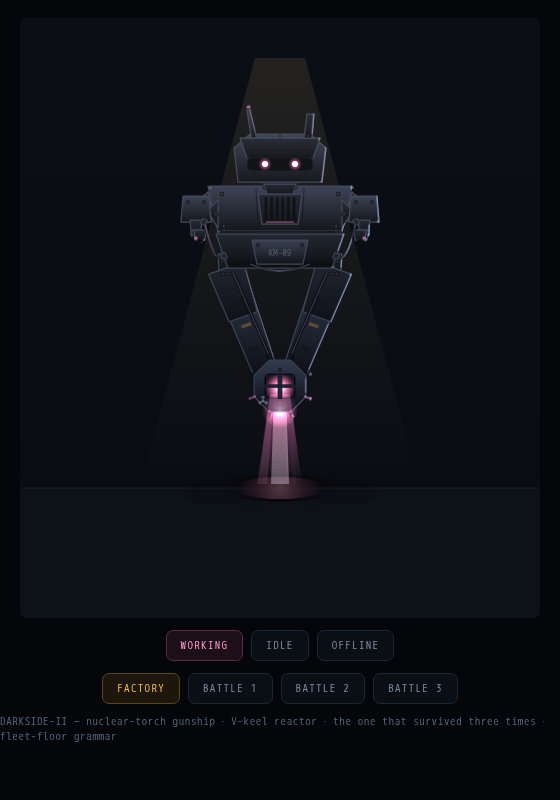
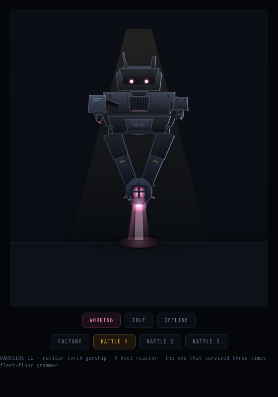
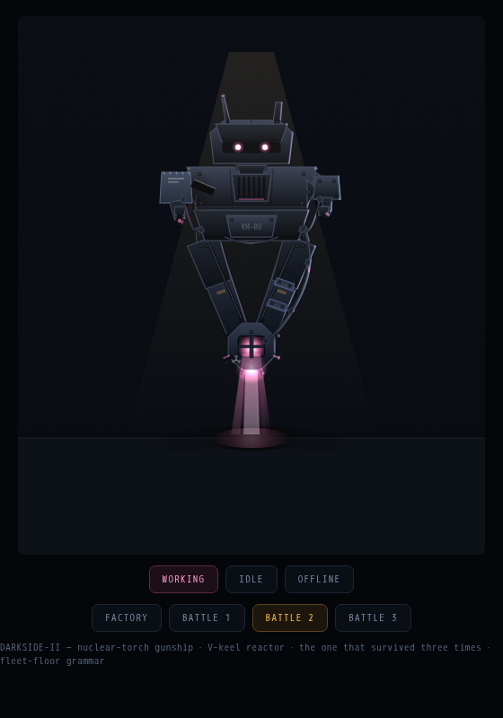
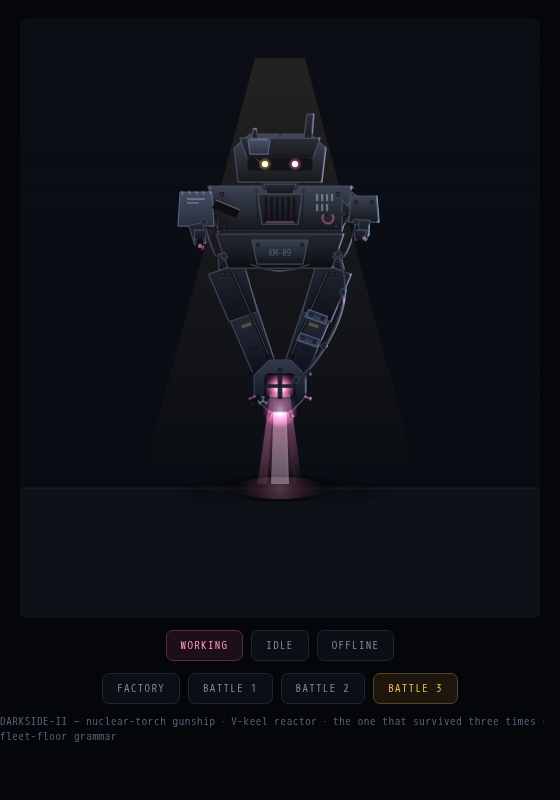

DARKSIDE-II — three battles, one survivor
every pass is a fight it took damage in and walked away from heavier · working state, t=8s

FACTORY — KM-09 as shipped. nuclear-torch V-keel, both optics pink, no record

BATTLE 1 — left sponson blown off, gouge across the chest. came back with a heavier SALVAGED pod, weld beads, wrong factory metal

BATTLE 2 — keel breach. bolted splint on the strut, coolant line rerouted OUTSIDE with clamp collars, one heat fin bent, still weeping

BATTLE 3 — took one in the visor. crack in the glass, left optic replaced AMBER, brow plate welded over it, whip antenna a snapped stub, seven tallies